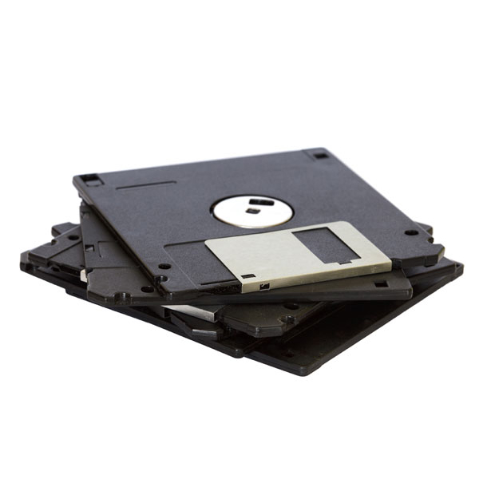
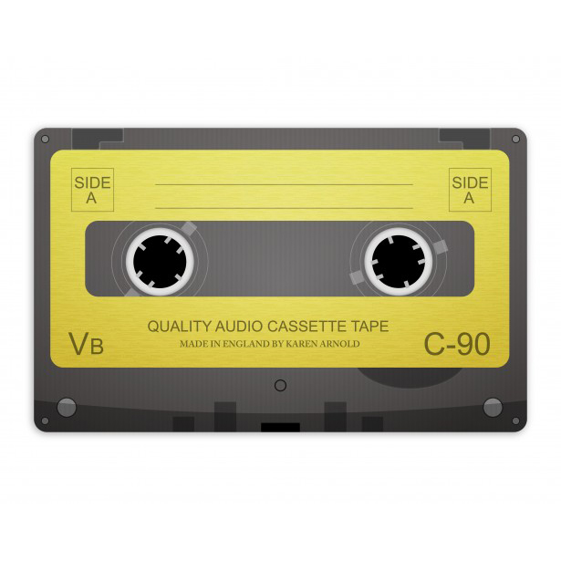
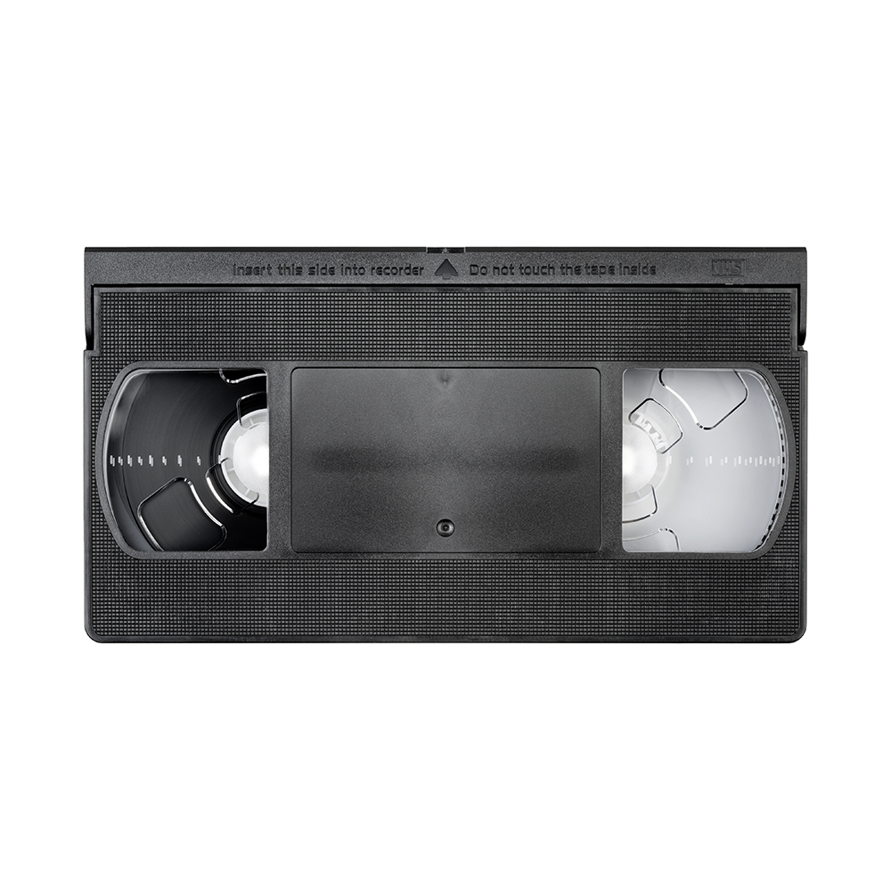
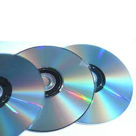

LES SUPPORTS DE
STOCKAGE
Si les adolescents d’aujourd’hui, la fameuse génération Z, râlent lorsque leur smartphone n’a pas au moins 128 Go d’espace de stockage, leurs grands-parents baby-boomers comptaient en kilobits ! Dès les balbutiements de l’informatique, les solutions de stockage des informations et des traitements ont revêtu un caractère essentiel. Au même titre que l’évolution de la puissance de calcul au fil des années, les supports de stockage ont progressivement gagné en capacité et en vitesse, avec de nombreux formats qui se sont succédé.
LES DISQUETTES
Dès le début des années 1960, plusieurs expériences ont été lancées pour inventer des supports de mémoire numérique plus légers et plus économiques que les tambours magnétiques ou les disques durs. Ainsi, en 1963 à Paris, la Société d'électronique et d'automatisme a expérimenté un tambour papier fait d'un disque souple de plastique magnétisé ; son maintien était assuré non par une enveloppe, mais par un flux d'air comprimé.
La disquette a été lancée par IBM en 1967 (dans sa version 8 pouces) pour stocker les microprogrammes des systèmes 370 et, accessoirement, envoyer pour un faible coût des mises à jour à leurs possesseurs[réf. nécessaire]. Cette première disquette pouvait stocker 80 000 caractères, soit environ une journée de frappe d’une opératrice de saisie. Pour cette raison, des matériels de saisie sur disquette commencèrent à remplacer les encombrantes et bruyantes perforatrices de cartes utilisées jusque-là.

CASSETTES & VHS

La cassette audio, Compact Cassette selon sa désignation officielle, appelée encore minicassette ou musicassette — couramment abrégé en français par l'allographe K7 — est un support d'enregistrement magnétique inventé par Lou Ottens, breveté et mis sur le marché en 1963 par Philips après plusieurs années de recherche et de développement. Elle contient deux bobines autour desquelles s'enroule une bande magnétique. Elle permet d'enregistrer et d'écouter de la musique ou tout autre type de son. Elle s'utilise avec un magnétophone spécialement conçu appelé « magnétocassette » ou « magnétophone à cassette ». Cet élément peut être intégré dans un appareil plus complexe comme un radiocassette, un combiné autoradio ou une chaîne haute-fidélité.
L’expression anglaise « Video Home System »1,2 (en français : « Système Vidéo Domestique »), mieux connue sous le sigle VHS3, désigne une norme d’enregistrement de signaux vidéo sur bande magnétique de 0,5 pouce (1,27 cm) mise au point par la marque japonaise JVC à la fin des années 1970, et disparue progressivement au cours des années 2000.
Le sigle VHS signifiait initialement « Vertical Helical Scan »4 (balayage hélicoïdal vertical), mais cette désignation est abandonnée rapidement, car trop difficile à mémoriser pour le grand public. Le format VHS arrive peu de temps après son concurrent direct, le Betamax créé par l'entreprise japonaise Sony, et devient le format le plus populaire. Un troisième concurrent tente de rivaliser avec les deux premiers sans succès, le V2000 de Philips et Grundig.

LES CDs

Un disque compact, le plus souvent désigné par son sigle anglais CD – abréviation de Compact Disc1 – est un disque optique utilisé pour stocker des données sous forme numérique.
Le Compact Disc a été développé par Sony et Philips et commercialisé à partir de décembre 1982 (mars 1983 en France).
Au début des années 1990, il se démocratise, et petit à petit, finit par remplacer les supports analogiques (disque microsillon, cassette audio).